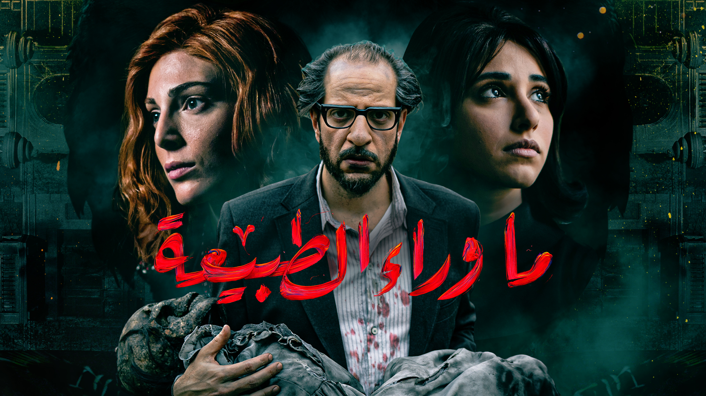
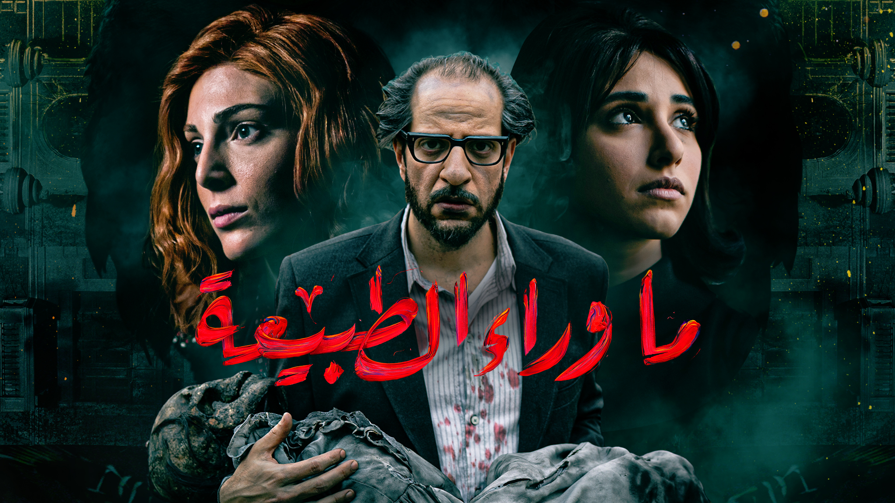

يعتبر مسلسل "ما وراء الطبيعة" عملاً درامياً مبنياً على سلسلة روايات خيالية من فئة الرعب والغموض للكاتب المصري أحمد خالد توفيق المتوفى في عام 2018, ويكون محورها ذكريات خيالية لطبيب مصري " متخصص بمجال أمراض الدم اسمه" رفعت إسماعيل
لمشاهدة المسلسل يرجى تسجيل الدخول
 
